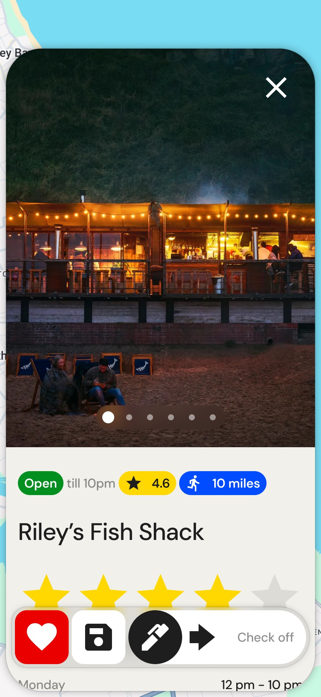

Shuck it is the app for finding seafood shacks worth the trip, rated by people who’ve actually been, so you never waste a day out on a dud.
Find your next seafood shack

Shuck it is the app for finding seafood shacks worth the trip, rated by people who’ve actually been, so you never waste a day out on a dud.
